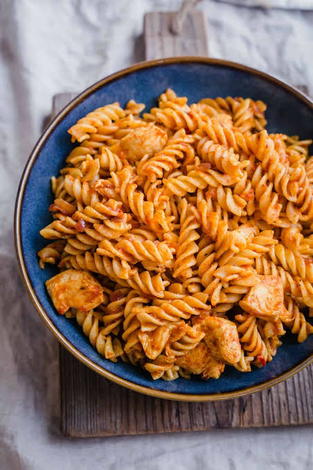

Perfectly cooked pasta tossed in a rich, savory sauce and blended with fresh herbs and premium ingredients. A comforting classic bursting with flavor in every bite.
Ingredients250 g pasta 2 tbsp olive oil 3 cloves garlic, minced 2 cups tomato sauce 1 tsp dried basil 1 tsp dried oregano Salt and pepper to taste Grated Parmesan cheese (optional)
StepsCook pasta according to package directions. Drain and set aside. Heat olive oil in a pan over medium heat. Sauté garlic for 1 minute until fragrant. Add tomato sauce, basil, oregano, salt, and pepper. Simmer for 10 minutes. Add the cooked pasta and toss until coated. Serve hot with Parmesan cheese if desired.